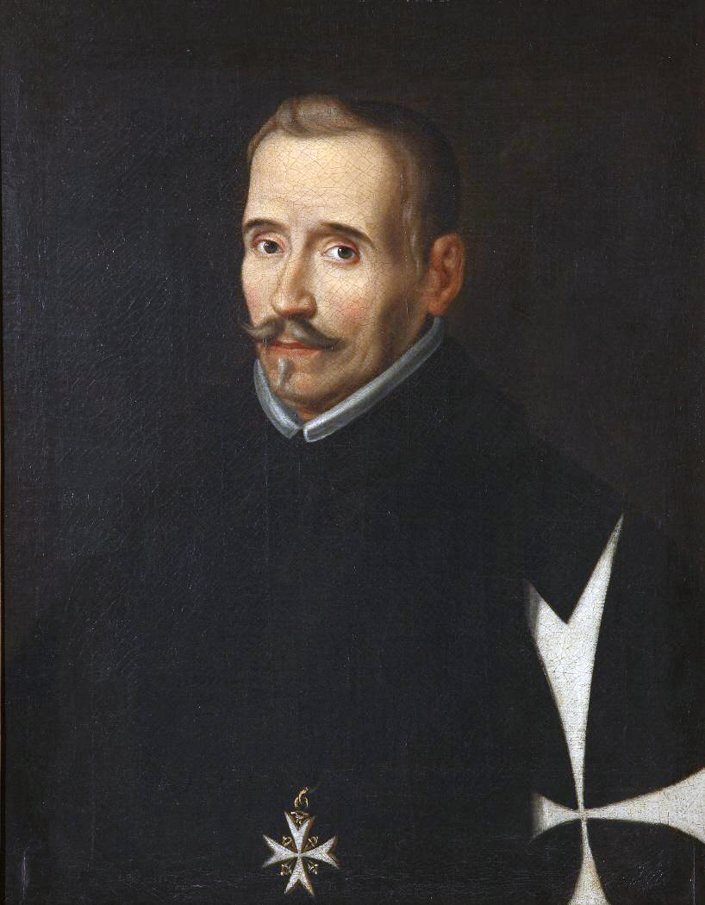
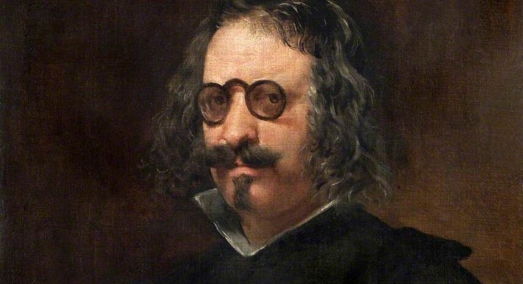
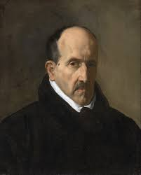
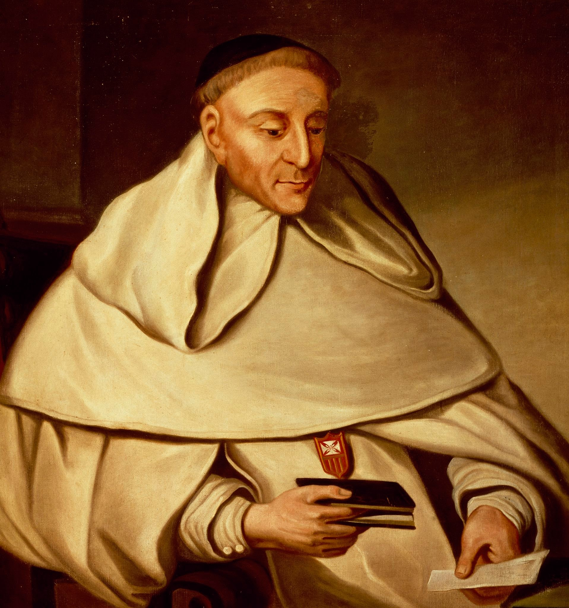

Miguel de Cervantes Saavedra (Alcalá de Henares,4 29 de septiembre de 1547-Madrid, 22 de abril de 1616) fue un novelista, poeta, dramaturgo y soldado español. Es ampliamente considerado una de las máximas figuras de la literatura española. Fue el autor de El ingenioso hidalgo don Quijote de la Mancha, novela conocida habitualmente como El Quijote, que lo llevó a ser mundialmente conocido y a la cual muchos críticos han descrito como la primera novela moderna, así como una de las mejores obras de la literatura universal, cuya cantidad de ediciones y traducciones solo es superada por la Biblia.5 A Cervantes se le ha dado el apelativo de «Príncipe de los Ingenios».
Desde el siglo xviii está admitido que el lugar de nacimiento de Miguel de Cervantes fue Alcalá de Henares,4 dado que allí fue bautizado, según su acta bautismal, y que de allí aclaró ser natural en la llamada Información de Argel (1580).7 El día exacto de su nacimiento es menos seguro, aunque lo normal es que naciera el 29 de septiembre, fecha en que se celebra la fiesta del arcángel San Miguel, dada la tradición de recibir el nombre del santoral del día del nacimiento. Miguel de Cervantes fue bautizado el 9 de octubre de 1547 en la parroquia de Santa María la Mayor.
Lope de Vega Carpio(Madrid, 25 de noviembre de 1562 - Madrid, 27 de agosto de 1635) fue uno de los poetas y dramaturgos más importantes del Siglo de Oro español y, por la extensión de su obra, uno de los autores más prolíficos de la literatura universal.
El llamado Fénix de los ingenios4 y Monstruo de Naturaleza (por Miguel de Cervantes) renovó las fórmulas del teatro español en un momento en el que el teatro comenzaba a ser un fenómeno cultural de masas.
Francisco Gómez de Quevedo Villegas y Santibáñez Cevallos (Madrid, 14 de septiembre de 15801-Villanueva de los Infantes, Ciudad Real, 8 de septiembre de 1645) fue un noble, político y escritor español del Siglo de Oro.
Fue caballero de la Orden de Santiago a partir de 16182 y señor de Torre de Juan Abad a partir de 1620.3 Junto con Luis de Góngora, con quien mantuvo una enemistad durante toda su vida, es reconocido como uno de los más notables poetas de la literatura española.[cita requerida] Además de su poesía, fue un prolífico escritor de narrativa y teatro, así como de textos filosóficos y humanísticos.
Luis de Góngora y Argote 1(Córdoba, 11 de julio de 1561-Córdoba, 23 de mayo de 1627) fue un poeta y dramaturgo español del Siglo de Oro, máximo exponente de la corriente literaria conocida más tarde, y con simplificación perpetuada durante siglos, como culteranismo o gongorismo, cuya obra será imitada a lo largo de los siglos en Europa y América.
Nació en la antigua calle cordobesa de Las Pavas, en una casa propiedad de su tío Francisco Góngora, racionero de la catedral, situada en el lugar que hoy ocupa el número 10 de la calle, aunque siguen existiendo dudas sobre eso.
Tirso de Molina (seudónimo de fray Gabriel Téllez; Madrid, 24 de marzo de 1579-Almazán, hacia el 20 de febrero de 1648) fue un religioso mercedario español que destacó como dramaturgo, poeta y narrador del Barroco.
Tirso de Molina destaca sobre todo como autor dramático. Su dramaturgia abarca principalmente la comedia de enredo, como Don Gil de las calzas verdes, y obras hagiográficas como la trilogía de La Santa Juana o La dama del olivar.